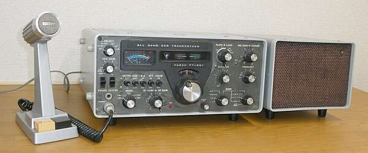 12
外部スピーカー ＳＰ-１０１Ｂ（純正扱い）、スタンドマイク ＹＤ-８４４と並べて見ました |
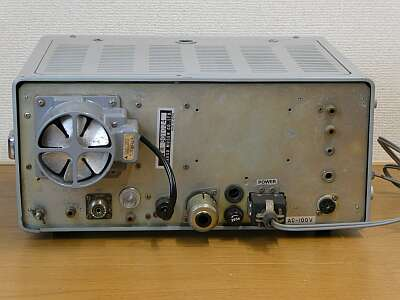 |
リアパネルです
DC-DCコンバータがないと、とてもすっきりしています |
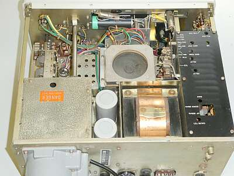 |
やや斜め後ろからシャーシ上面
内臓スピーカーは、ケースにではなく本体に取り付けられています
ちゃんとバッフル板が取り付いています |
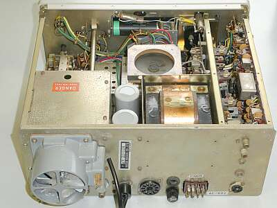 |
シャーシ上面 ＡＦ/ＩＦ部のカバーを外して写しています
１１Pプラグを抜いています（後述）
ＤＣ１２Ｖ運用のためには、オプションのＤＣ－ＤＣコンバータを組み入れる必要があります
|
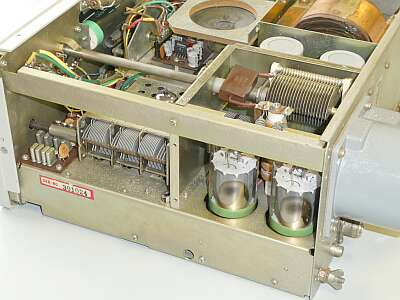 |
サイドから、終段部のシールドを外して写しています
１００Ｗモデルですので、終段管は６ＪＳ６Ａが２本です
ＲＦ同調ＶＣは、３連のものが採用されています
スピーカー取付部 バッフル板の採用が見て分かります
|
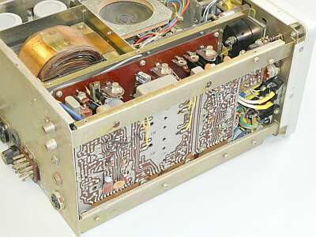 |
上写真の反対サイドです
手前がＩＦ基板で、その奥がＡＦ基板です
フィルタはデフォルトのまま（ＳＳＢ用のみ）、ＣＷ/AMフィルタはオプションです |
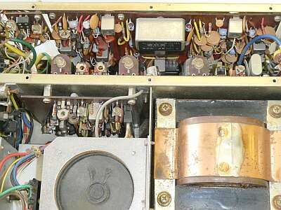 |
ＡＦ/ＩＦ部を真上から
黒ブラスチック板（カバー）は、取り外して映しています
オプション・フィルタの追加は、ちょっと面倒そうです
ＶＯＸ関係、マーカー２５／１００ＫＨｚの切り替えなど上蓋を開ければ簡単に設定できるようになっています
スピーカーの上に見える基板は、キャリア発振ユニット |
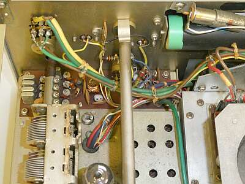 |
本機の特徴であるプリミックス部
３．５/１４MHｚ帯については、周波数変換クリスタルは使用しません
ＩＦ：９ＭＨｚと、５．０～５．５ＭＨｚＶＦＯ周波数の差し引きか加算によって目的周波数を得ています
メイン・ダイヤル/１００ＫＨｚダイヤルが見えています
ＶＣは、ＲＦ同調用です
|
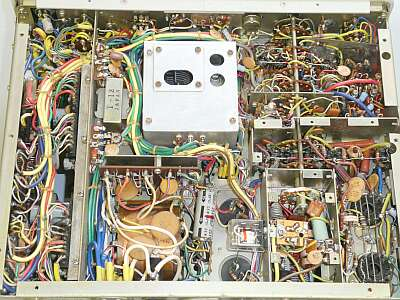 |
シャーシ底面
ワイヤーハーネスが大活躍しています
ＲＦドライブ部と、終段部のシールド板は外して写しています |
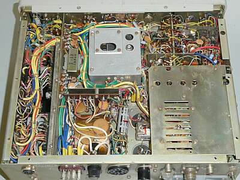 |
ＲＦドライブ部と、終段部にはシールドが用意されています |
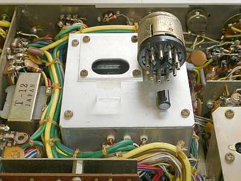 |
本体を振るとカラカラ音が・・・・一体どこから？
ＶＦＯのシールドの中からこんな透明なアクリルの板というかパーツが出てきました
いったい何者でしょう？
あと、１１Pプラグの芯（キー）の破損部が出てきました
いつか、大きな衝撃を受けた？ |
|
５０年選手です
いつの日かから、お蔵入りした製品が半世紀を経過してどのような状態になっているのか、変な興味で入手しました
メーカー違いで同世代の ＴＲＩＯ ＴＳ-５２０Ｘ も入手してみました
本機ですが、外装の汚れ、フロントパネル（ツマミ、特にメーターの赤塗装）の日焼けと、良い条件での保管ではないことは一目瞭然です
ケースを外して中を見ると、外装ほど傷んではいません、むしろきれいな状態です
ご紹介の写真は、一生懸命クリーニングした後に撮ったものです
通電は、問題なくできました（ヒューズの容量は事前にチェックしています）
しかしスイッチの接点接触不良、ＶＲのガリなどは半端ないくらい酷いものでした
まずは、これらを中心にクリーニングからスタートです
かなり大変でしたが、クリーニング作業だけで最低の送受信をするところまでは復旧しました
意外といえば意外です
まず気付いたのは、マーカーが発振していません
これから順番にチェックをスタートです
受信のチェック時には、何も起きていないかったのですが、送信テストを開始すると、ある時急に発煙
ドライブ段プレートに入っているＲＦチョークが燃えました！
もしかしたらバンドスイッチの絶縁がＮＧ（ベークライトが炭化）したかも・・・
過去に2台、このような状況になったＹＡＥＳＵのトランシーバーに遭遇しています
犯人は、多分ですが接点復活材の不用意な吹付です
|
| to be continued |